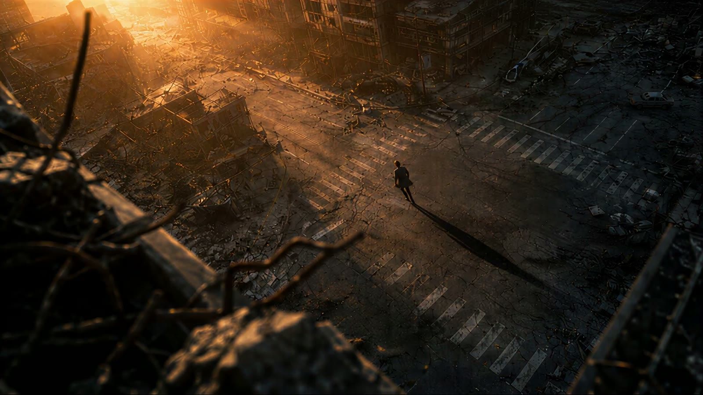
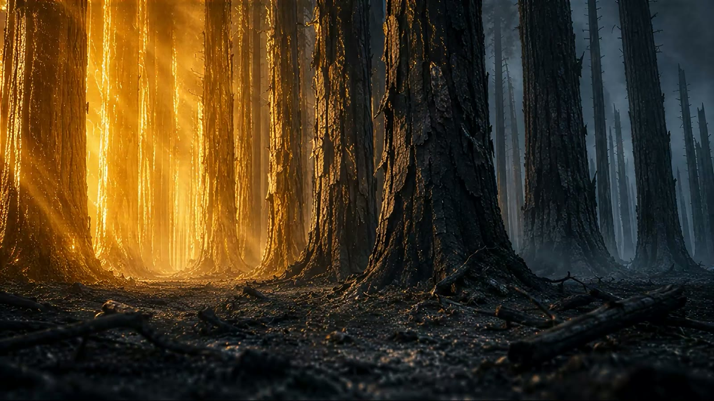
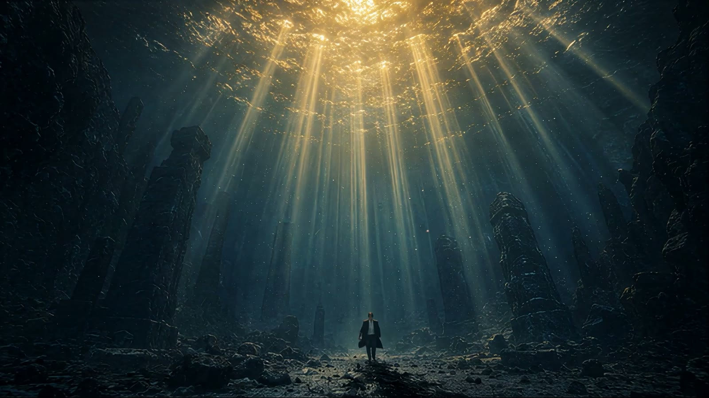
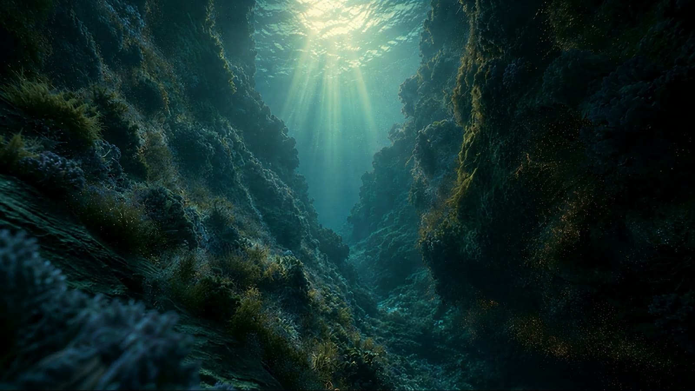
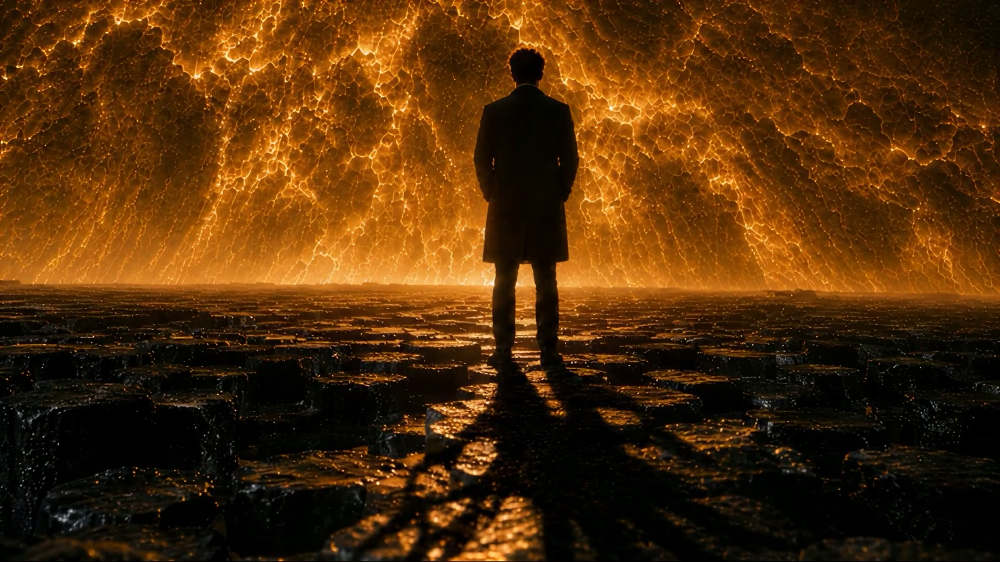
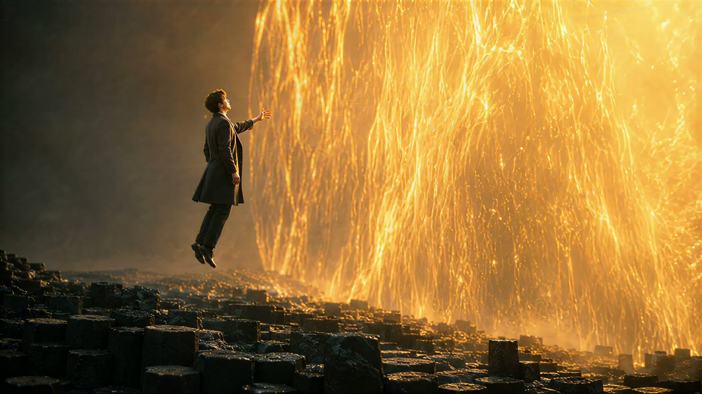
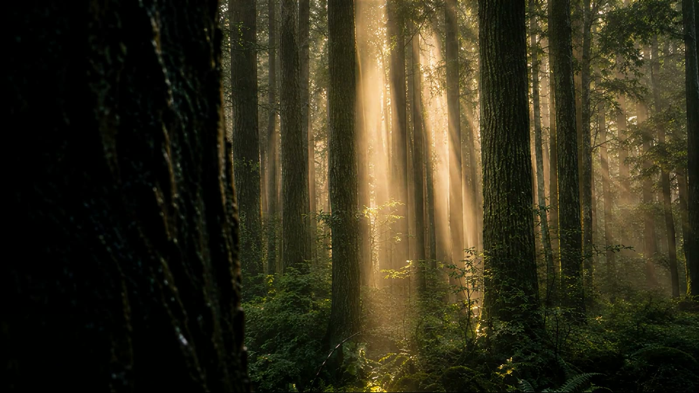
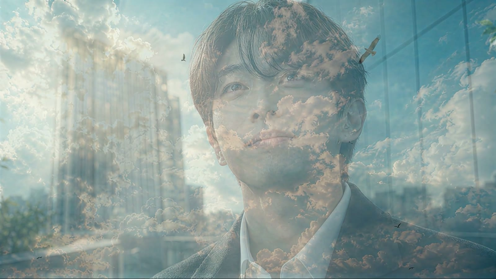

나를 쫓는 빛에게
To the Light That Chased Me
LOGLINE
도시를 집어삼키는 거대한 황금빛 존재에게 쫓기던 남자가, 절벽 끝에서 깨닫는다 — 그 빛은 단 한 번도 그를 해치려 한 적이 없었다.
THEME — 주제
"쫓김의 공포는 사실,
쫓아오는 사랑이었다."
이 영화의 무너지는 세계는 실재하는 장소가 아니다. 빛을 두려워하는 사람의 내면이다.
자기를 살리려는 것을 파괴자로 오해하고, 자기를 안으려는 것을 억압자로 여겨 도망치는 사람 — 그의 안에서 세계는 실제로 이렇게 생겼다. 도시는 폐허고, 숲은 재이고, 바다는 어둠이고, 모든 길은 절벽에서 끝난다. 두려움과 걱정과 불안은 내면을 이 네 가지 풍경으로 바꾸어 놓는다. 이 영화의 전반부는 그 내면의 지옥을 숨김없이 상영한다.
그리고 이 영화가 믿는 것은 하나다. 그 지옥의 끝, 더는 도망칠 수 없는 밑바닥에서 — 평생 그를 쫓아온 그것이 마침내 따라잡았을 때 — 일어나는 일은 파멸이 아니라는 것. 빛은 그를 벌하러 온 것이 아니라 일으키러 온 것이었다. 그가 한 일은 단 하나, 돌아서서 그것을 받아들인 것뿐이다. 그 순간 부서졌던 모든 것이 실은 더 아름답게 태어나기 위해 부서지고 있었음이 드러난다. 빛이 지나간 자리는 폐허가 아니라 — 회복의 자리였다.
한 문장 소개
"한 남자가 거대한 황금빛 존재에게 쫓겨서 무너지는 도시를, 불탄 숲을, 깊은 바다를, 절벽까지 도망쳐요. 완전한 재난 추격전이죠. 그런데 절벽 끝에서 — 빛이 덮치지 않고 멈춰서 기다립니다. 그때 그의 눈동자 속에서 지나온 장면들이 다시 재생되는데, 빛이 내리치던 모든 순간이 사실은 주먹이 아니라 펼쳐진 손이었어요. 그가 받아들이는 순간 빛이 그를 안아 올리고 — 도망쳐온 그 길을 되돌아가 보면, 무너진 바다와 숲과 도시가 전부 살아 있습니다. 무너진 것은 세계가 아니라 세계를 보던 눈이었다는 이야기, 그리고 쫓아온 것은 공포가 아니라 끝까지 놓지 않으려는 사랑이었다는 이야기예요."
두 번 보게 되는 영화다. 1회차에는 추격전을 보고, 2회차에는 — 같은 화면에서 — 한 사람이 자기 안의 빛과 화해하는 과정을 본다.
WHY — 그 빛에는 여러 이름이 있다
이 영화는 빛의 정체를 끝까지 명명하지 않는다. 의도된 침묵이다.
어떤 관객에게 그 빛은 조건 없이 먼저 다가온 사랑일 것이다 — 자격을 묻지 않고, 값을 요구하지 않고, 도망치는 등 뒤를 향해 끝까지 달려오는 사랑. 어떤 관객에게는 태초부터 자기 안에 있던 힘일 것이다 — 생명, 희망, 회복의 에너지, 아직 한 번도 정면으로 마주 본 적 없는 자기 자신의 가장 깊은 부분. 로마의 황제이자 철학자였던 마르쿠스 아우렐리우스는 일기에 이렇게 적었다 — "네 안을 파라. 네 안에 선(善)의 샘이 있다. 계속 파기만 한다면, 언제나 새로 솟아날 샘이." 이천 년 전의 이 문장이 말하는 그 샘과, 카뮈가 생의 가장 어두운 시기에 발견한 것은 같은 것이다 — "한겨울에, 나는 마침내 내 안에 무적의 여름이 있다는 것을 배웠다."
사랑이라 불러도 맞고, 내면의 힘이라 불러도 맞다. 이 영화가 고집하는 것은 이름이 아니라 방향이다: 그것은 언제나 먼저 온다. 우리가 찾기 전에 우리를 찾아오고, 우리가 도망치는 동안에도 걸음을 멈추지 않는다. 빅토르 위고가 《레 미제라블》에 남긴 문장 그대로 — "인생 최고의 행복은, 우리가 사랑받고 있다는 확신이다." 이 영화의 남자에게 결핍되어 있던 것은 그 확신 하나였고, 2분 46초는 그 한 문장이 그에게 도착하는 데 걸린 시간이다.
그렇다면 왜 그는 도망치는가. 빛은 모든 것을 드러내기 때문이다. 숨기고 싶은 사람에게 드러남은 형벌처럼 보인다. 자기를 가치 없다고 여기는 사람은 자기를 비추는 것을 견디지 못한다 — 그래서 사랑이 다가올수록 더 빨리 달아난다. 이 영화의 추격전은 그 오해의 초상이다. 쫓는 쪽은 한 번도 서두른 적이 없고, 쫓기는 쪽 혼자서 필사적이다.
왜 무성(無聲)인가 — 두려움은 설득으로 풀리지 않는다
이 영화에는 대사가 없다. 빛은 말하지 않고, 남자는 묻지 않는다. 이유는 단순하다 — 두려움에 빠진 사람에게 말은 들리지 않기 때문이다. 몽테뉴는 자기 생을 돌아보며 이렇게 고백했다 — "내 삶은 끔찍한 불행들로 가득했다. 그리고 그 대부분은 실제로 일어나지 않았다." 두려움은 논증으로 반박되는 것이 아니다. 그리고 — 바라보는 것만으로 끝나는 것도 아니다. 그는 추격 내내 여러 번 빛을 향해 선다: 뒤돌아보고, 심해의 빛기둥 아래 멈춰 서고, 소금 평원에서는 눈높이의 태양과 마주한다. 그러나 두려움의 눈으로 바라보는 동안에는 아무것도 바뀌지 않는다. 두려움은 마음이 바뀔 때에만 끝난다. 그래서 이 영화의 전환점은 설명이 아니라 같은 빛 앞에 다른 마음으로 서는 일이다. 그것이 전부고, 그것이 다다.
순수한 추격전이 아닌 네 가지 증거
이 영화의 표면은 완전한 재난 추격전이다. 그러나 처음부터 화면 곳곳에, 2회차 관객만 읽을 수 있는 반증들이 심겨 있다.
- ① 빛은 한 번도 주먹인 적이 없다빛이 덮치는 순간의 프레임을 정지시키면, 그 형상은 전부 내리치는 주먹이 아니라 펼쳐진 손, 감싸려는 모션이다. 빛의 존재에는 얼굴도 형체도 없다 — 인격은 오직 움직임으로만 표현되며, 그 움직임의 문법은 시종일관 포옹의 문법이다. 관객의 몸은 1회차에도 이것을 어렴풋이 느낀다. 왜 이 재난이 이렇게… 아름답지?
- ② 부서짐은 탄생의 문법으로 그려진다헤르만 헤세는 《데미안》에 이렇게 썼다 — "새는 알에서 나오려고 싸운다. 알은 세계다. 태어나려는 자는 하나의 세계를 깨뜨려야 한다." 이 영화에서 빛이 닿는 자리마다 세계는 무너진다 — 그러나 색은 잿더미가 아니라 금빛으로 물든다. 불탄 숲 한가운데의 한 프레임은 화면의 왼쪽 절반이 금빛, 오른쪽 절반이 청회색으로 정확히 갈라져 있다: 빛이 지나간 자리와 아직 닿지 않은 자리. 서사는 "파괴"를 말하는데 색은 처음부터 "개화"를 말하고 있다. 무너지는 것은 세계가 아니라 알이다.
- ③ 그림자는 각도가 아니라 마음을 따른다이 영화에서 남자를 위협하는 괴물 같은 그림자는 단 한 번도 그를 따라잡지 못한다. 따라잡을 수 없다 — 그 그림자는 그의 것이기 때문이다. 그림자는 그의 내면이다: 걱정, 불안, 어둠, 절망. 그는 추격 내내 여러 번 빛을 향해 선다. 그러나 두려움으로 바라보는 동안, 그림자는 빛을 마주한 순간에도 괴물로 남는다. 그림자가 사람의 크기로 돌아오는 것은 절벽의 대면 단 한 번 — 자기를 살리려는 것을 파괴자로 여겨 도망쳐온 세월의 어리석음을 깨닫고, 뉘우침과 감사로 그 빛 앞에 서는 순간뿐이다. 빛을 바라보는 것이 중요한 것이 아니다. 어떤 마음으로 그 빛을 향해 서는가가 모든 것이다 — 그림자의 크기는 그 마음의 실측값이다.
- ④ 도망친 길이 그대로 귀향길이 된다포옹 이후, 영화는 새로운 세계로 가지 않는다. 도망쳐온 네 세계를 정확히 역순으로 되밟는다 — 절벽은 물이 흐르는 폭포가 되어 있고, 어둡던 심해에는 수면 위의 태양이 비치고, 불탄 숲은 초록으로 무성하고, 폐허의 도시는 갠 하늘 아래 서 있다. 같은 길, 반대 방향, 회복된 얼굴. 내면의 세계였으므로 — 그 길을 되밟는 일은 곧 자기 자신을 다시 보는 일이다.
왜 AI로 만들어야 했는가
첫째, 이것은 내면의 풍경이다. 도시가 무너지고 바다가 갈라지는 이 세계는 실재하는 장소가 아니라 두려움에 사로잡힌 한 사람의 내부다. 카메라를 들고 들어갈 수 있는 장소가 아니다.
둘째, 빛에게 인격을 주되 얼굴을 주지 않아야 했다. 도시 스케일의 빛의 존재가 "덮치는 게 아니라 감싸려 한다"는 것을 — 얼굴도 눈도 없이, 오직 움직임의 질감만으로 전달해야 했다. 프레임마다 빛의 모션을 연출 지시로 통제할 수 있는 생성형 파이프라인이 이 인격화의 유일한 도구였다.
셋째, 세계 넷을 하나의 추격으로 잇는 일. 폐허의 도시, 불탄 숲, 심해, 현무암 절벽 — 물리적으로 공존할 수 없는 네 세계를 한 호흡의 추격으로 꿰면서 전 구간의 광원(단 하나의 금빛)과 색 문법을 일관되게 유지하는 것은 AI 생성 + 감독 편집의 조합으로만 가능한 설계였다.
"AI로 만들었다"는 사실 자체에는 변별력이 없다. 이 작품의 목표는 AI여야만 가능한 연출 — 얼굴 없는 존재의 인격화, 네 세계의 단일 추격, 내면 풍경의 실사화 — 로 그 필연성을 증명하는 것이다.
STRUCTURE — 빛의 양이 곧 감정 곡선이다
이 영화의 감정 곡선은 문자 그대로 빛의 양이다. 가장 어두운 두 지점이 어디인지 보라 — 심해의 밑바닥, 그리고 빛에게 붙잡히기 직전. 가장 어두운 순간은 빛이 가장 가까이 온 순간이었다. 그리고 최고점은 추격의 어떤 스펙터클도 아닌, 마지막의 평범한 하늘이다. 영화 전체에서 가장 밝은 것은 — 그가 도망치던 바로 그 하늘이다.
전반 추격 약 88초 / 대면과 포옹 약 10초 / 귀환 약 50초. 도망치는 데는 평생이 걸리고, 돌아서는 데는 한순간이 걸리고, 돌아가는 길은 — 놀랍도록 짧다. 이 비대칭이 이 영화의 지도다.
SCENES — 네 세계를 지나 하늘까지
폭풍의 마천루
잿빛 폭풍 구름 아래, 웜즈아이(수직 앙각)로 올려다본 차가운 마천루. 금빛은 아직 없다.
추격이 시작되기 전, 그가 살던 내면의 초상. 빛이 오기 전부터 이 하늘은 이미 폭풍이었다 — 그의 세계는 빛이 무너뜨리기 전부터 무너져 있었다. 그리고 이 웜즈아이 마천루는 영화의 맨 끝에서 정확히 같은 앵글로 다시 선다. 그때는 유리에 갠 하늘이 비친다. 처음과 끝, 같은 자리, 같은 앵글 — 바뀐 것은 하늘이 아니라 하늘을 보는 눈이다.
제1세계 · 폐허의 도시 — 무너진 일상

인 메디아스 레스
갈라진 젖은 아스팔트에 금빛이 어른거린다. 무너진 마천루 사이로 하늘에서 폭포처럼 쏟아져 내리는 거대한 황금빛 벽. 부감 — 폐허의 횡단보도를 가로질러 달리는 남자, 그 옆에 길게 드리운 그림자.
영화는 설명 없이 도주의 한가운데서 시작한다. 왜 쫓기는지, 언제부터 쫓겼는지 말해주지 않는다 — 도망치는 사람 본인도 그것을 모르기 때문이다. 두려움에는 기원 설화가 없다. 정신을 차려 보면 우리는 이미 달리고 있다. 첫 세계가 폐허의 도시인 것은 우연이 아니다 — 불안이 가장 먼저 무너뜨리는 것은 일상이다.
첫 실사 프레임은 부서진 땅의 웅덩이에 비친 금빛이다. 빛은 처음부터 낮은 곳에 먼저 와 있다 — 쫓아오는 존재의 첫 등장이 하늘의 위용이 아니라 발밑의 반영이라는 것. 관객 몰래 심어둔 이 영화의 첫 번째 고백이다.
세네카, 《루킬리우스에게 보내는 편지》 — "우리는 현실에서보다 상상 속에서 더 자주 고통받는다." 이 폐허 전체가 그 문장의 풍경화다.
공포의 얼굴, 달리는 발
뒤돌아보는 남자의 상반신 — 검은 정장, 흰 셔츠, 겁에 질린 눈. 아스팔트를 박차는 검은 구두 클로즈업. 로우앵글 — 달리는 그의 앞에 뻗어 나간 괴물 같은 그림자들. 다시 어깨 너머로 돌아보는 얼굴.
이 영화에서 그의 얼굴은 오직 뒤돌아볼 때만 보인다. 앞을 보고 달리는 그는 실루엣이고, 얼굴이 화면에 열리는 것은 공포에 질려 등 뒤를 확인하는 순간뿐이다 — 마지막 한 번을 제외하고. 도망자의 얼굴은 언제나 과거를 향해 있다.
정장과 구두. 그는 도망칠 준비를 하고 도망친 사람이 아니다 — 삶의 한가운데서 그대로 낚아채인 사람이다. 두려움은 언제나 일상의 한복판에서 시작된다.
플라톤, 《국가》 동굴의 비유 — 빛을 등진 자에게 보이는 것은 벽에 드리운 그림자뿐이며, 그는 그것을 실재라 믿는다. 이 영화의 남자가 도망치는 방향은 정확히 자기 그림자 속이다.
제2세계 · 불탄 숲 — 다 타버린 마음

재의 땅
숯이 된 검은 대지, 왼편에서 스며드는 금빛. 웜즈아이 — 불탄 가지들 사이로 올려다본 금빛 하늘. 화면 좌측 절반은 금빛, 우측 절반은 청회색으로 갈라진 불탄 숲. 부감 — 잿빛 대지에 홀로 선 남자, 그의 그림자가 뿌리처럼 뻗어 있고, 화면 오른쪽에 금빛 벽이 다가온다.
도시를 벗어나면 안전할 줄 알았다. 그러나 도착한 곳은 이미 타버린 숲이다 — 소진(燒盡)된 마음의 풍경. 도망은 언제나 더 황폐한 내면으로 이어진다. 에머슨이 여행에 대해 남긴 문장이 정확히 이것을 말한다 — "나의 거인은, 내가 가는 곳마다 나와 함께 간다." 장소를 바꾸는 것으로는 아무것도 벗어나지 못한다. 두려움의 지리학은 언제나 내부에 있으므로.
이 반반 프레임이 이 영화의 색 논제를 한 화면에 요약한다. 금빛이 닿은 왼쪽과 아직 닿지 않은 오른쪽 — 어느 쪽이 재난인가? 타버린 것은 회색 쪽이다. 빛이 닿은 자리는 타는 것이 아니라 물드는 것이다.
단테, 《신곡》의 첫 행 — "우리 인생길 한가운데서, 나는 어두운 숲속에 있었다. 올바른 길을 잃어버렸기에." 문학이 아는 가장 유명한 길 잃음이 이 숲의 형상이다.
눈 ①② · 공포
남자의 눈 익스트림 클로즈업. 금빛이 피부에 어른거리지만, 눈동자는 두려움으로 굳어 있다.
이 영화의 진짜 무대가 처음 등장한다 — 눈동자. 이 영화에서 눈 클로즈업은 다섯 번 반복되며(공포 → 공포 → 눈물 → 계시 → 평온), 그 다섯 개의 눈이 곧 이 영화의 5막 구조다. 세계는 한 번도 바뀌지 않는다. 눈이 바뀐다.
생텍쥐페리 《어린 왕자》 — "마음으로 보아야 잘 보인다. 가장 중요한 것은 눈에 보이지 않는다." 여우가 건넨 비밀이 이 영화의 방법론이다.
기울어진 거목들 사이
안으로 기울어진 거대한 불탄 나무들 사이를 걷는 작은 실루엣. 불타는 숲을 배경으로 달리는 발.
숲의 거목들이 그를 향해 기울어져 있다 — 두려워하는 자의 눈에는 세계 전체가 자기를 덮치려는 형상으로 보인다. 불안은 풍경을 편집한다.
제3세계 · 심해 — 가라앉은 깊음
가라앉은 세계
수면 아래에서 올려다본 검은 첨탑들, 위에서 스미는 빛줄기. 잔해가 흩어진 해저, 왼편의 금빛. 그리고 — 물방울이 맺힌 남자의 눈 클로즈업, 눈 ③.
도시에서 달렸고, 숲에서 달렸고 — 바다에서는 달릴 수 없다. 도주의 세 번째 세계가 심해인 이유다. 마음의 가장 깊은 곳, 가라앉은 것들이 쌓이는 자리. 물속에서 모든 것이 느려지고, 느려진 그 속도에서 처음으로 무언가가 눈에 맺힌다. 이 눈은 공포의 눈이 아니다 — 물인지 눈물인지 구분되지 않는 것이 맺힌 눈이다. 심해는 이 영화의 첫 번째 밑바닥이고, 사람은 밑바닥에서 처음 운다.
카를 융 — "사람은 빛의 형상들을 상상하는 것으로 밝아지지 않는다. 어둠을 의식하는 것으로 밝아진다." 심해로의 하강은 도주의 연장이면서, 자기도 모르게 시작된 치유의 첫 순서다 — 가장 깊은 곳까지 내려가 본 사람만이 자기 어둠의 지도를 갖게 된다.

심해의 빛기둥
어두운 해저 협곡으로 쏟아지는 금빛 광선들. 수면에서 대성당의 창처럼 내리꽂히는 거대한 빛기둥들, 그 아래 홀로 선 남자. 해저를 천천히 딛는 구두, 피어오르는 침전물. 금빛 파도가 해저 잔해 위로 부서진다.
빛은 수면을 뚫고 밑바닥까지 내려와 기둥처럼 선다 — 가장 깊은 곳까지 따라 내려오는 빛. 그리고 주목할 것: 여기서 그는 도망치다 말고, 몇 번이나 멈춰 서서 그 빛기둥들을 바라본다. 도주는 심해에서 처음으로 흔들린다. 두려움의 밑바닥에서 사람은 처음으로, 자기를 쫓아오는 것이 아름답다는 것을 본다.
그러나 바라봄이 곧 만남은 아니다 — 이때의 그는 아직 두려움의 눈으로 보는 자이고, 그의 그림자는 여전히 괴물이다. 이 응시와 절벽의 대면 사이의 거리가, 빛을 '보는 것'과 빛 앞에 '서는 것'의 거리다.
제4세계 · 현무암 절벽 — 마지막 도주

세계의 끝을 향해
어두운 바위 비탈 너머 금빛 지평선. 갈라진 현무암 포장로를 카메라를 향해 달려오는 남자, 등 뒤에 금빛 폭풍의 하늘. 육각형 소금 평원, 수평선에 내려앉은 태양 — 가슴에 손을 얹고 비틀거리는 남자. 현무암 기둥 벽. 능선 전체가 금빛으로 타오르는 절벽. 거대한 현무암 산 위로 폭발하듯 솟는 태양, 그 아래 점 같은 남자.
마지막 세계는 더 이상 도망칠 곳이 없는 지형 — 절벽. 인생의 막다른 골목, 내면의 가장 낮은 밑바닥, 절망이 마지막으로 데려가는 자리. 그런데 이 구간에 이상한 숏 하나가 박혀 있다. 소금 평원. 쫓아오던 빛이 여기서 처음으로 하늘이 아니라 수평선에, 그의 눈높이에 내려와 있다. 압도하던 존재가 같은 높이로 내려온 한순간 — 그는 가슴에 손을 얹고 처음으로 달리기를 멈칫한다.
노자, 《도덕경》 — "도(道)는 서두르지 않는다. 그러나 이루지 못하는 것이 없다(無爲而無不爲)." 빛은 한 번도 속도를 올린 적이 없다. 그를 따라잡지 못해서가 아니라 — 그가 스스로 멈출 때까지 기다리기 위해서다.
하강
시야 전체가 금빛으로 무너져 내린다 — 빛의 벽이 폭포처럼 내려온다.
음악이 영화 전 구간 최고조에 이르는 지점이 정확히 이 하강에 놓여 있다.
대면 — 절벽 끝에서

그가 멈춘다
남자가 등을 보이고 서 있다. 도망치지 않는다. 눈앞에 하늘 전체를 채운 거대한 황금빛 파도가 산처럼 솟아 있다 — 그런데 덮치지 않는다. 멈춰 있다. 그리고 처음으로, 그의 그림자가 그의 등 뒤에, 카메라 쪽으로 떨어져 있다.
이 영화의 힌지. 2분 46초 전체에서 일어나는 유일한 진짜 사건이 이 프레임에 있다 — 그가 빛 앞에 섰다, 다른 마음으로. 빛을 바라본 것은 처음이 아니다: 심해에서도, 소금 평원에서도 그는 빛과 마주했고, 그때마다 그림자는 괴물인 채였다. 두려움의 눈으로 보는 마주 봄은 도주의 일부였을 뿐이다. 이 프레임의 마주 봄이 다른 것은 단 하나, 마음이다 — 자기를 살리려는 것을 파괴자로 여겨온 오해의 세월을 깨닫고, 두려움 대신 뉘우침과 감사로 서는 것.
빛은 여전히 거대하고, 절벽은 여전히 끝이고, 세계는 하나도 바뀌지 않았다. 그러나 그림자가 그 마음의 변화를 증언한다: 추격 내내 그의 앞을 막던 괴물이, 등 뒤로 넘어가 본래의 크기로 돌아온다. 괴물은 처음부터 빛을 두려워하는 마음의 크기였다. 그는 아무것도 이기지 못했고, 아무것도 바꾸지 못했다. 다만 마음의 방향을 선택했다 — 그리고 그것으로 충분했다.
추격 구간의 가장 어두운 지점이 바로 이 대면 직전이다. 가장 어두운 순간은 빛에게 버림받은 순간이 아니라, 빛을 마주 보기 직전이었다. 그리고 빛은 — 산처럼 솟은 채, 기다린다. 덮칠 수 있는 것이 덮치지 않고 기다리는 것.
빅터 프랭클 — "인간에게서 모든 것을 빼앗아 갈 수 있다. 그러나 단 하나, 주어진 상황에서 자신의 태도를 선택하는 자유만은 빼앗을 수 없다." · 괴테 — "사랑은 지배하지 않는다. 사랑은 가꾼다."
눈 ④ · 열쇠
남자의 눈 익스트림 클로즈업. 눈동자 가득 금빛이 비쳐 있다.
추격 내내 공포로 굳어 있던 그 눈에, 처음으로 빛이 담긴다. 그의 눈동자 속에서 지나온 장면들이 다시 읽히고 — 모든 "공격"이 미완의 포옹이었고, 등 뒤의 모든 "파괴"가 개화였음이 드러난다. 계시는 새로운 정보가 아니다. 이미 본 것을 다시 보는 것이다.
프루스트 — "진정한 발견의 여정은 새로운 풍경을 찾는 데 있지 않다. 새로운 눈을 갖는 데 있다." 이 한 문장이 이 영화의 방법론이자 결론이다. 2분 46초 동안 풍경은 한 번도 바뀌지 않았다 — 눈이 바뀌었다.

충돌이 아니라, 들어 올려짐
그의 발이 땅에서 떨어진다. 남자가 공중에 떠오른 채, 쏟아지는 금빛 폭포를 향해 손을 뻗는다. 충돌이 아니다 — 들어 올려짐이다.
이 영화의 심장. 절벽 끝에 선 자를 기다리는 것은 추락이었는데, 빛에게 자신을 맡긴 순간 그는 떨어지는 대신 들린다. 그가 한 일은 받아들인 것뿐이다 — 자격을 증명하지 않았고, 값을 치르지 않았고, 다만 돌아서서 두 팔을 열었다. 스스로를 가치 없다 여겨온 사람을, 빛은 조건 없이 안아 올린다.
칼 로저스 — "기묘한 역설은, 내가 나 자신을 있는 그대로 받아들일 때, 그때에야 비로소 내가 변한다는 것이다." 있는 그대로 받아들여지는 순간에만 사람은 변한다. 변한 다음에 받아들여지는 것이 아니라.
빛 안에서 — 거듭남
씬 전환 실측 기준, 영화에서 가장 긴 무전환 구간(14초)이 여기 놓여 있다. 포옹 이후 컷은 끊기지 않고, 그는 빛 안에서 다시 태어난다. 그림자는 본래의 크기로 돌아오고 — 그 그림자 위에 꽃이 피어난다.
추격 구간에서 평균 2~4초마다 세계를 갈아치우던 편집이, 포옹의 순간 완전히 숨을 멈춘다. 두려움의 시간은 조각나 있고, 안긴 자의 시간은 이어져 있다 — 편집 리듬 자체가 심리의 증언이다. 그리고 이 긴 빛 속에서 일어나는 일은 회복보다 큰 것이다: 거듭남. 두렵고 망가져 있던 내면이 이 14초 동안 다시 지어진다. 그림자 위에 피는 꽃 — 마음의 파괴된 가장 어두운 자리가 새로운 생명의 대지로 바뀌는 순간.
니체 — "춤추는 별 하나를 낳으려면, 자기 안에 혼돈을 지니고 있어야 한다." 그의 혼돈은 헛되지 않았다. 그것은 별의 재료였다. · 카뮈 — "한겨울에, 나는 마침내 내 안에 무적의 여름이 있다는 것을 배웠다. 세상이 아무리 세게 나를 밀어붙여도, 내 안에는 더 강한 것, 더 나은 것이 있어 되밀고 있다는 것을 알기에." 그림자 위의 꽃은 그 여름의 첫 번째 증거물이다.
되짚는 길 — 빛에 안겨, 자신을 돌아보다

같은 길, 반대 방향, 회복된 얼굴
폭포가 흐르는 절벽, 아침 안개, 강가의 초록 풀. 수면 아래에서 올려다본 태양 — 고요한 물. 이끼 낀 숲 바닥에 내려앉은 햇살 한 점. 햇빛이 기둥처럼 쏟아지는 초록의 숲. 젖은 도시 골목으로 비껴드는 금빛.
절벽 → 물 → 숲 → 도시. 빛에 안긴 그는 내면의 하늘을 건너며, 도망쳐온 네 세계를 정확히 역순으로 다시 본다. 불탔던 숲의 자리에 초록이 무성하고, 그를 삼킬 것 같던 물은 태양을 담은 채 고요하고, 세계의 끝이던 절벽에는 물이 흘러 생명을 기른다. 새 세계가 아니다 — 같은 세계다. 빛이 지나간 자리마다 회복이 자라 있었다.
그리고 그 세계들은 그의 내면이었으므로, 이 여정은 곧 자기 자신을 처음으로 따뜻하게 바라보는 일이다. 파괴라 믿었던 자기 역사 전체가 실은 치유의 과정이었음을 보는 눈 — 거기에 감사의 눈물이 맺힌다.
키르케고르 — "삶은 뒤돌아볼 때에만 이해된다. 그러나 살아가는 것은 앞을 향해서다." · T.S. 엘리엇 《네 개의 사중주》 — "우리는 탐험을 멈추지 않으리라. 그리고 모든 탐험의 끝은, 우리가 출발했던 곳에 도착하여 그곳을 처음으로 아는 것이리라."
글리치 — 잠에서 깨듯, 점점 깨어남
주사선(走査線)과 색수차로 일그러진 화면들 — 파란 하늘 아래 걸어가는 사람들, 거리의 형체들, 빛의 얼룩. 현실 세계의 조각들이 아주 잠깐씩 스친다. 노이즈는 프레임을 거듭할수록 점점 걷히고, 흐리던 형체들이 서서히 또렷해진다. 그리고 눈 ⑤: 남자의 눈 클로즈업, 초점이 맞았다. 동공에 도시와 금빛이 비쳐 있다. 모든 진실을 본 눈이 맑게 빛난다.
잠에서 깨어나는 시야다. 감옥 같던 내면의 세계에 갇혀 있던 사람이, 점점 깨어나 현실로 돌아오는 과정 — 갓 깨어난 눈이 초점을 찾기 전의 흐림, 형체가 겹치고 빛이 번지는 그 몇 초. 화면에 잠깐씩 비치는 것은 환상이 아니라 현실의 세상이다: 걸어가는 사람들, 파란 하늘, 아무 일도 일어나지 않는 오후. 내면의 밑바닥까지 내려갔다 온 사람만이 할 수 있는 방식으로, 그는 이제 현실에 부딪힐 수 있는 사람으로 일어나고 있다. 노이즈가 걷히는 속도가 곧 깨어남의 속도다.
플라톤의 동굴 비유에는 잘 알려지지 않은 후반부가 있다 — 동굴을 나온 자의 눈은 한 번에 태양을 보지 못한다. 처음에는 그림자를, 다음에는 물에 비친 상(像)을, 그다음에야 사물을, 맨 마지막에 태양을 본다. 깨어남은 사건이 아니라 과정이다 — 점점, 눈이 빛에 적응하는 속도로.
에필로그 — 되찾은 일상, 아름다움을 보는 눈

얼굴이 하늘로 녹아든다
어두운 지하보도 끝, 출구 너머로 햇빛 쏟아지는 거리 — 나무, 차들, 평범한 오후. 웜즈아이 유리 마천루 — 유리창마다 갠 하늘과 흰 구름이 비친다. 역광의 초록 잎사귀들 사이로 빛나는 태양, 그 너머의 빌딩. 남자의 얼굴 — 정면, 평온, 도심의 옥상에서 살짝 위를 올려다본다. 그리고 그 얼굴 위로 갠 하늘, 구름 사이의 태양, 그 빛 속을 활공하는 새들이 겹쳐 든다 — 이중노출로 포개진 얼굴과 하늘이 한 화면에 머물다가, 얼굴이 서서히 지워지고 하늘만 남는다. 암전.
어두운 지하보도에서 빛의 거리로 걸어 나오는 것으로 에필로그가 열린다 — 동굴의 출구가 여기 있다. 그리고 콜드 오픈의 응답: 같은 웜즈아이 마천루, 폭풍 대신 갠 하늘. 도시는 처음부터 이 도시였다.
마지막으로 그의 얼굴 — 추격 내내 뒤돌아볼 때만 열리던 얼굴이, 처음으로 위를 올려다보며 열린다. 도망자의 목이 하던 유일한 동작(등 뒤 확인)이, 자유인의 목이 하는 첫 동작(하늘 보기)으로 바뀐다. 그리고 영화의 마지막 숏은 그의 시점이다: 그가 평생 도망치던 그 하늘을, 이제 그가 자발적으로 바라본다.
하늘에는 새들이 떠 있다 — 쫓기지 않고, 빛 속을 그저 활공하는 것들. 알을 깨고 나온 새가 마침내 자기 하늘을 나는 것이다. 새는 그의 자유, 모든 것으로부터 해방된 행복한 내면의 초상이다. 영화 전체의 가장 밝은 프레임이 이 평범한 하늘이다. 새로 태어난 자의 눈에 일상은 그냥 평범한 것이 아니다 — 아름다운 세상이다. 스펙터클이 아니라 일상이 이 영화의 가장 밝은 프레임이라는 것, 그것이 이 영화의 마지막 문장이다.
TEXT — 세 개의 문장
이 영화가 쓰는 텍스트는 전부 셋뿐이다.
① 오프닝 타이틀 — 나를 쫓는 빛에게
영화 맨 앞, 암전 위 5초. 음악은 여기서 무음으로부터 서서히 올라온다. 제목은 설명이 아니라 수신인이다 — "…에게"로 끝나는 편지의 첫 줄. 관객은 이것을 도망자가 추격자를 부르는 말로 읽고, 영화가 끝난 뒤 같은 문장을 다시 읽으면 헌사가 되어 있다. 제목이 먼저 오는 이유가 여기 있다. 봉투가 편지보다 먼저 와야 하기 때문이다.
제목 다음에 오는 첫 이미지가 폭풍 하늘이고, 그다음이 갈라진 아스팔트에 어린 금빛이다. 이 영화의 첫 고백(빛은 처음부터 낮은 곳에 먼저 와 있었다)이 제목 바로 뒤에 놓인다.
② 엔딩 카드 — 관객에게
However far you wander,
the light never loses sight of you.
아무리 멀리 헤매어도,
빛은 당신을 놓치지 않습니다.
"놓치다"가 이 영화의 동사다. '잃다'는 가만히 있다가 잃는 것이고, '놓치다'는 쫓던 쪽이 붙잡지 못하는 것이다 — 2분 46초 동안 한 번도 속도를 올리지 않고 따라온 존재에게 맞는 말은 후자뿐이다. 영어의 lose sight of가 시선을 말하는 것도 우연이 아니다. 이 영화의 진짜 무대는 눈이고(다섯 번의 눈 클로즈업), 내내 바뀌는 것은 그의 눈이었다. 마지막 문장이 말하는 것은 한 번도 바뀌지 않은 쪽의 시선이다.
어미를 평서형이 아니라 "-습니다"로 둔 것은 의도다. 이 영화의 마지막 임무는 잠언을 새기는 것이 아니라, 지금 어두운 데를 지나는 관객에게 직접 말을 거는 것이다.
③ 크레딧 뒤 헌사
O Love that wilt not let me go
George Matheson
크레딧이 다 지나간 뒤, 마지막 한 줄. 스코틀랜드 목사 조지 매시슨(George Matheson, 1842–1906)이 1882년에 쓴 시의 첫 행이다. 그는 스무 살에 시력을 잃었고 약혼자는 그를 떠났다. 마흔 살 되던 해 여동생의 결혼식 밤에 홀로 남아, 극심한 고통 속에서 이 시를 몇 분 만에 썼다. 스스로 "고통의 열매"라 불렀고, 자기가 지은 것이 아니라 받아적은 것 같았다고 했다. 빛을 잃은 사람이 자기를 놓지 않는 사랑에 대해 쓴 문장 — 이 영화의 마지막 자리에 이보다 맞는 문장은 없다.
세 문장을 이어 보면 이 영화의 구조가 한 줄로 드러난다. 나를 쫓는 빛에게 → (2분 46초) → 내버려두지 않는 사랑이여. 둘 다 부르는 말이고, 수신인은 처음부터 끝까지 같은 존재다. 바뀐 것은 그를 부르는 이름뿐이다 — 바뀐 것이 세계가 아니라 그것을 보는 눈이었다는 이 영화의 명제가, 텍스트에서 한 번 더 실행된다.
VISUAL — 네 개의 관통 원리
1. 빛은 한 번도 공격하지 않는다 — 모션의 인격
빛의 존재에는 얼굴도, 눈도, 형체도 없다. 도시 스케일의 벽·파도·폭포일 뿐이다. 인격은 오직 움직임의 질감으로만 부여된다 — 내리칠 수 있는 것이 내려앉고, 덮칠 수 있는 것이 멈추고, 정지 프레임마다 주먹이 아니라 펼쳐진 손이다. 관객이 1회차에 느끼는 원인 모를 위화감("왜 이 재난이 아름답지?")이 2회차의 열쇠가 된다.
2. 색이 진실을 먼저 안다
서사 채널(추격·붕괴·도주)은 공포를 말하고, 색 채널은 처음부터 진실을 말한다. 재난의 기본색은 차가운 블루-그레이지만, 빛이 닿는 자리마다 화면은 금빛으로 물든다 — 잿더미가 아니라 개화의 색으로. 불탄 숲의 반반 프레임(좌 금빛/우 청회색)이 이 이중 채널의 물증이다. 부서짐처럼 보이는 것은 더 아름답게 태어나기 위한 과정이고, 빛이 지나간 자리는 회복과 치유의 자리로 거듭난다. 관객의 머리는 서사를 따라가고 눈은 색을 따라간다. 반전이 도착했을 때 관객이 "속았다"가 아니라 "알고 있었다"고 느끼는 이유다.
3. 그림자는 내면의 계기판이다
그림자 모티프의 전 궤적이 실측된다 — 도시에서 그의 앞에 괴물처럼 뻗어 있고, 불탄 숲에서 뿌리처럼 사방으로 자라고, 절벽에서 점처럼 작아지다가, 대면의 순간 등 뒤로 넘어가 본래의 크기로 돌아온다 — 그리고 빛 안에서, 그 위에 꽃이 핀다. 그림자는 그의 심리다: 걱정, 불안, 어둠, 절망 — 광학이 아니라 마음을 따라 자라고 줄어드는 것. 두려움으로 빛을 바라보는 동안에는 마주 선 순간에도 괴물로 남고, 깨달음과 감사로 서는 순간에만 사람의 크기로 돌아온다.
빛은 모든 것을 드러낸다 — 숨으려는 자에게 그 드러남은 위협으로 보이지만, 안기는 자에게 같은 드러남은 치유의 시작이다. 이 영화의 괴물은 소멸하지 않는다. 제자리로 돌아올 뿐이다 — 그리고 그 자리가 꽃밭이 된다.
4. 세계는 넷, 빛은 하나
폐허의 도시(무너진 일상) · 불탄 숲(소진된 마음) · 심해(가라앉은 깊음) · 절벽(절망의 끝) — 서로 다른 상처의 지형 네 개가 한 호흡의 추격으로 이어지지만, 광원은 전 구간 단 하나(금빛)다. 저휘도 배경 + 고휘도 피사체의 대비 문법도 전 구간 유지된다. 내면의 어떤 방으로 도망쳐 들어가도 같은 빛이 따라온다는 것 — 미술의 일관성이 곧 서사의 일관성인 경우.
렌즈 · 앵글 문법
- 웜즈아이 북엔드첫 숏과 마지막 도시 숏이 같은 수직 앙각 마천루 — 폭풍의 잿빛 vs 갠 하늘의 유리. 영화 전체가 이 두 앵글 사이의 여정이다.
- 불안정에서 수평으로추격 구간은 로우앵글·더치·부감의 불안정 화각 + 광각 질주. 대면 이후 화면이 수평을 되찾는다.
- 발 클로즈업 3회아스팔트 · 불탄 흙 · 해저 — 같은 검은 구두가 세 세계의 땅을 밟는다. 세계가 바뀌어도 도망치는 사람이 같다는 연속성의 못.
- 눈 클로즈업 5회공포 · 공포 · 눈물 · 계시 · 평온. 이 영화의 실질적 챕터 표지.
레퍼런스 운용 원칙
이 작품의 레퍼런스는 인류가 상처와 회복에 대해 남긴 가장 오래되고 깊은 문장들이다 — 마르쿠스 아우렐리우스와 세네카의 스토아, 플라톤의 동굴, 단테의 어두운 숲, 노자의 무위, 몽테뉴와 프루스트, 괴테와 위고와 헤세와 카뮈, 그리고 융과 로저스와 프랭클 — 어둠과 치유를 평생 들여다본 사람들. 이들에게서 정서의 좌표만 빌려오되, 이미지·구도·장면은 전부 이 세계(금빛 벽·네 세계·그림자)의 언어로 새로 지었다. 인용이 아니라 계승이다.
그리고 빛의 정체는 끝까지 명명하지 않는다. 사랑, 생명, 희망, 내면의 힘, 잃어버린 자기 자신 — 관객 각자가 자기 인생에서 도망쳐온 바로 그것의 이름을 붙이도록 자리를 비워 두었다. 이 영화가 겨냥하는 관객은 지금 마음이 어두운 사람이다. 그에게 이 영화가 하고 싶은 말은 단 하나 — 당신 안의 겨울 한가운데에, 무적의 여름이 있다.
SYMBOLS — 상징 사전
- 황금빛 벽이 영화의 이중 스토리 그 자체. 1회차엔 종말, 2회차엔 끝까지 쫓아오는 사랑 — 또는 태초부터 내 안에 있던 힘. 위에서 아래로 쏟아지는 형상: 사랑은 언제나 먼저, 낮은 곳으로 내려오는 것.
- 그림자주인공의 내면 그 자체 — 걱정, 불안, 어둠, 절망. 각도가 아니라 마음을 따른다: 두려움으로 바라보는 동안에는 빛 앞에서도 괴물로 남고, 깨달음과 감사로 서는 순간 본래의 크기로 돌아온다. 두려움은 소멸하는 것이 아니라 제자리를 찾는 것.
- 그림자 위에 피는 꽃이 영화의 가장 조용한 기적. 마음의 파괴된 가장 어두운 자리가 새로운 생명의 대지로 바뀐다 — 겨울 한가운데의 무적의 여름(카뮈)이 맺은 첫 열매.
- 다섯 개의 눈이 영화의 진짜 무대. 공포 → 공포 → 눈물 → 계시(금빛) → 평온(세계가 담김). 세계는 바뀌지 않는다, 눈이 바뀐다 — "진정한 발견의 여정은 새로운 눈을 갖는 데 있다"(프루스트).
- 검은 정장과 구두삶의 한가운데서 낚아채인 사람. 도망칠 준비 없이 시작된 도망 — 두려움은 언제나 일상의 한복판에서 시작된다.
- 네 세계파괴된 내면의 지도. 무너진 일상 · 소진된 마음 · 가라앉은 깊음 · 절망의 끝. 어디로 도망쳐도 같은 빛이 따라온다 — "나의 거인은 나와 함께 간다"(에머슨).
- 심해의 빛기둥가장 깊은 밑바닥까지 따라 내려오는 빛. 도주가 처음 흔들리는 자리 — 밑바닥은 버림받는 곳이 아니라 처음으로 올려다보게 되는 곳.
- 소금 평원의 수평선 태양압도하던 빛이 그의 눈높이까지 내려온 한순간. 낮아짐으로써 다가오는 사랑의 예고편.
- 절벽인생의 막다른 골목, 내면의 밑바닥. 도주의 끝 = 만남의 자리. 더 이상 도망칠 수 없는 곳에서만 일어나는 종류의 사건이 있다.
- 멈춰서 기다리는 빛이 영화의 클라이맥스. 덮칠 수 있는 것이 덮치지 않는 것 — "사랑은 지배하지 않는다. 사랑은 가꾼다"(괴테).
- 돌아섬 — 다른 마음으로 서기이 영화의 유일한 진짜 사건. 몸을 돌리는 동작이 아니라 마음이 도는 일 — 그는 이전에도 빛을 바라보았으나, 깨달음과 감사로 그 앞에 선 것은 이 한 번뿐이다. 아무것도 이기지 않고, 아무것도 바꾸지 않고, 다만 태도를 선택하는 것 — 인간에게서 빼앗을 수 없는 마지막 자유(프랭클).
- 부양(浮揚)추락의 반대. 절벽 끝에서 자신을 맡긴 자는 떨어지지 않고 들린다 — 받아들임이 유일한 조건이었다(로저스의 역설).
- 되짚는 길도망친 길이 그대로 귀향길이 된다. 내면의 세계였으므로, 되밟는 일은 곧 자신을 처음으로 따뜻하게 바라보는 일 — 감사의 눈물이 맺히는 구간.
- 글리치감옥 같던 내면 세계에서 현실로 깨어나는 과정. 잠깐씩 스치는 현실의 조각들, 점점 걷히는 노이즈 — 동굴을 나온 눈이 빛에 적응하는 속도(플라톤).
- 웜즈아이 마천루같은 자리, 같은 앵글, 다른 하늘. 처음엔 폭풍, 끝엔 갠 하늘 — 바뀐 것은 세계가 아니라 그것을 보는 눈이라는 북엔드 증명.
- 공중의 새들알을 깨고 나온 새(헤세). 주인공의 자유 — 모든 것으로부터 해방된 행복한 내면의 초상. 쫓기지 않고 빛 속을 활공하는 존재.
- 올려다보는 얼굴추격 내내 뒤돌아볼 때만 열리던 얼굴이 마지막에 위를 보며 열린다. 도망자의 목례에서 자유인의 목례로.
CHARACTER — 두 명의 주인공, 한 명은 얼굴이 없다
남자 — 얼굴은 공포로만 열린다
검은 정장에 흰 셔츠, 검은 구두의 30대 남자. 이 인물의 얼굴 운용에는 규칙이 하나 있다 — 추격 구간에서 그의 얼굴은 오직 뒤돌아볼 때와 두려워할 때만 보인다. 앞을 보고 달리는 그는 실루엣이나 발이나 등이다. 카메라가 그의 정면을 평온하게 담는 것은 영화 전체에서 마지막 옥상 숏 단 한 번이다.
이 규칙의 의미: 두려움에 쫓기는 동안 사람의 얼굴은 과거를 향해 있다(등 뒤 확인). 얼굴이 미래를 향해 열리는 것 — 위를, 하늘을 보는 것 — 은 두려움이 끝난 다음에만 가능한 동작이다. 그래서 이 영화의 진짜 클라이맥스 표정은 절벽의 계시(눈)와 옥상의 평온(얼굴) 두 번에 나뉘어 온다. 눈이 먼저 바뀌고, 얼굴이 따라온다.
빛 — 얼굴 없는 주인공
이 영화의 두 번째 주인공에게는 얼굴도, 눈도, 사지도 없다. 도시 스케일의 벽·파도·폭포·빛기둥일 뿐이다. 인격은 오직 움직임으로 존재한다 — 서두르지 않는 보폭(속도를 올린 적이 없다), 정지 프레임마다의 펼쳐진 손, 절벽에서의 기다림, 그리고 포옹의 들어 올림.
얼굴을 주지 않은 이유는 명확하다 — 얼굴이 있으면 특정한 존재가 되고, 없으면 각자가 평생 도망쳐온 바로 그것이 된다. 어떤 관객에게 이 빛은 조건 없는 사랑일 것이고, 어떤 관객에게는 자기 안에 원래부터 있던 힘일 것이고, 어떤 관객에게는 오래 외면해 온 진짜 자기 자신일 것이다. 영화는 정답을 자막으로 달지 않는다.
SOUND — 두 곡, 그리고 그 사이의 정적
이 영화에는 대사가 없다. 나레이션도, 효과음도 없다. 소리의 채널은 음악 하나뿐이며, 따라서 음악이 이 영화에서 유일하게 말을 할 수 있는 존재다.
음악은 한 곡이 아니다
이 영화의 스코어는 두 곡이다. 그리고 두 곡을 이어 붙인 자리는 관객이 결코 알아챌 수 없는 곳에 숨겨져 있다 — 빛과 마주하기 직전, 소리가 거의 사라지는 자리.
음악은 추격 전 구간을 끊김 없이 밀고 가다가, 빛의 벽이 하강하는 순간 전 구간 최고조에 이른다. 그리고 단 6초 만에 거의 들리지 않는 곳까지 떨어진다. 그 최저점이 놓인 자리가 대면 직전이다.
소리와 빛이 같은 프레임에서 죽는다
주목할 것은 그 최저점의 위치다. 화면이 가장 어두워지는 바로 그 초에 음악도 함께 사라진다. 이 영화에서 관객이 가진 정보 채널은 둘뿐이다 — 보이는 것과 들리는 것. 그 둘이 같은 프레임에서 동시에 꺼진다. 남자가 몸을 돌려 빛 앞에 서는 순간, 영화는 관객에게서 빛과 소리를 동시에 거두어 간다. 볼 것도 들을 것도 없는 몇 초. 그리고 그 공백에서 그가 마음을 바꾼다.
완전한 무음이 아닌 이유
사실상 들리지 않는 크기지만 0이 아니다. 음악은 끊기지 않았다. 거의 사라졌을 뿐이다.
이것이 설계의 핵심이다. 완전히 끊으면 빛이 물러간 것이 되고, 남겨두면 빛이 숨을 죽이고 기다리는 것이 된다. 이 영화의 빛은 한 번도 그를 떠난 적이 없으므로 — 절벽에서도 떠나지 않았고, 다만 그가 돌아설 때까지 소리를 낮추고 기다렸다. 화면에서 빛이 덮치지 않고 멈춰 서 있는 그 정지를, 음악은 잔향으로 똑같이 연기한다.
그리고 두 곡의 이음새가 정확히 이 잔향 속에 있다. 첫 번째 곡은 정적으로 죽고, 두 번째 곡은 포옹과 함께 태어난다. 관객은 곡이 바뀐 것을 알지 못한다. 다만 안겨 올려진 다음의 음악이 그전과 다른 것이라고 느낄 뿐이다 — 그리고 그 느낌이 맞다.
꺼짐 — 마지막 9초
음악은 에필로그부터 서서히 물러나기 시작해 엔딩 카드가 끝나는 자리에서 완전히 멎는다. 그 뒤 9초 남짓, 크레딧과 헌사는 완전한 무음 속에서 지나간다.
이 영화가 무성영화라는 사실이 마지막에 한 번 더 확인되는 자리다. 음악이 있는 동안 관객은 안내를 받았고, 음악이 꺼진 뒤 남는 것은 글자와 침묵뿐이다. 헌사가 소리 없이 놓이는 이유가 여기 있다 — 그 한 줄은 관객에게 들려주는 말이 아니기 때문이다.
DIRECTOR'S STATEMENT — 감독의 말
당신을 쫓아오는 것의 이름
이 영화는 어떤 달리기를 위해 만들었다.
무엇에게 쫓기는지도 모르면서 평생 달리는 달리기. 뒤를 돌아보면 거대한 것이 다가오고 있어서, 그것의 정체를 확인할 겨를도 없이 다시 앞을 보고 달리는 — 그런 세월. 나는 두려움이 대개 그런 식으로 생겼다고 생각한다. 몇 번을 마주 보아도, 두려움의 눈으로 보는 한 우리는 그것을 본 것이 아니다. 세네카의 말대로, 우리는 현실에서보다 상상 속에서 더 자주 고통받는다 — 그리고 상상 속의 고통에는 끝이 없다. 다른 마음으로 보기 전까지는.
그리고 이상한 사실 하나. 도망치는 사람의 눈앞에는 언제나 괴물 같은 그림자가 어른거리는데 — 그 그림자는 한 번도 그를 따라잡지 못한다. 따라잡을 수 없다. 그것은 빛을 두려워하는 마음이 그린 그 사람 자신의 그림자이기 때문이다. 우리가 도망치며 무서워하는 것의 상당 부분은, 우리를 비추는 것을 두려움으로만 대할 때 생기는 우리 자신의 어둠이다.
그래서 이 영화의 클라이맥스는 폭발이 아니다. 절벽 끝에서, 더 도망칠 곳이 없어서, 그가 선다. 빛을 바라본 것은 처음이 아니다 — 그러나 이런 마음으로 선 것은 처음이다: 평생 도망쳐온 세월이 오해였음을 알고, 그 어리석음까지 내려놓으며, 두려움 대신 감사로. 그리고 본다 — 산처럼 솟아 있는 그것이, 덮치지 않고 기다리고 있는 것을. 그 정지의 순간이 내가 이 영화에서 가장 하고 싶었던 말이다. 당신을 끝까지 쫓아온 것은, 당신을 해치려는 것이 아닐지도 모른다. 그것이 그렇게 집요했던 이유는 단 하나 — 당신을 놓치고 싶지 않아서였는지도 모른다.
몸을 돌린 사람에게 일어나는 일을 영화는 그대로 보여준다. 그림자는 등 뒤로 넘어가 본래의 크기로 돌아오고, 그 위에 꽃이 피고, 도망쳐온 길은 돌아가는 길이 되고, 무너진 줄 알았던 세계는 전부 살아서 그를 기다리고 있다. 잿더미인 줄 알았던 숲은 초록이고, 그를 삼키려던 바다는 태양을 담고 있다. 세계는 한 번도 무너진 적이 없었다. 무너져 보였을 뿐이다 — 도망치는 눈에는 모든 것이 무너져 보인다.
이 빛의 이름을 나는 끝까지 붙이지 않았다. 누군가에게는 조건 없이 먼저 와 준 사랑일 것이고, 누군가에게는 자기 안에 처음부터 있었던 힘일 것이다. 카뮈는 그것을 이렇게 불렀다 — 한겨울에 발견한, 내 안의 무적의 여름. 이름이 무엇이든 방향은 같다. 그것은 당신을 부수러 오는 것이 아니라 일으키러 온다. 헬렌 켈러는 평생의 어둠 속에서 이렇게 썼다 — "세상은 고통으로 가득하지만, 고통을 이겨낸 이야기로도 가득하다." 이 영화는 그 두 번째 목록에 바치는 2분 46초다.
마지막 장면에서 그는 하늘을 올려다본다. 평생 도망치던 그 하늘이다. 거기에는 새들이 날고 있다 — 쫓기지 않고, 그저 빛 속을 활공하면서. 알을 깨고 나온 새는 그렇게 난다. 나는 이 영화를 보는 누군가가, 지금 마음의 가장 어두운 골목을 지나고 있는 누군가가, 극장을 나서며 자기 하늘을 한 번 올려다보게 되기를 바란다. 그리고 오래 도망쳐온 것이 있다면, 아주 잠깐이라도 이렇게 물어보기를 — 저것은 정말 나를 해치려는 것일까. 아니면, 끝까지 나를 놓지 않으려는 것일까.
빛은 한 번도 너를 해치려 한 적이 없다.
너를 쫓아온 것은 공포가 아니라,
끝까지 놓지 않으려는 사랑이었다.
CREDITS
- WRITTEN · DIRECTED · EDITEDAHN JAEKWON
- GENERATIVE AI · COMPOSITINGAHN JAEKWON
- PIPELINEGPT Image · Seedance 2.0 · After Effects · Topaz